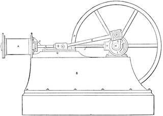
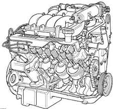

name: inverse layout: true class: center, middle, inverse --- # React! You! Now! [ Internal talk: March 20 2015 ] --- # I'm <span class="gray">John Haugeland</span> --- # I'm <span class="gray">John Haugeland</span> (because pointing that out is funny) --- # I'm <span class="gray">John Haugeland</span> (because pointing that out is funny) <span class="bottomcut"></span> --- template: inverse # In this talk --- # Very little! --- # React is about simplicity So today I will be too 😄 --- # <span class="red">An hour</span>?!?!?<br/>!?!!??1!11!1!!11one1!eleven --- <span class="topcut"></span> # Hour, schmour Ain't nobody got time for that <span class="bottomcut"></span> --- # I need about <span class="red">20 minutes</span> <span class="bottomcut"></span> --- layout: false .left-column[ ## Simplicity ] .right-column[ - What do you do in React ] --- layout: false .left-column[ ## Simplicity ] .right-column[ - What do you do in React - You make tags ] --- layout: false .left-column[ ## Simplicity ] .right-column[ - What do you do in React - You make tags - <span class="red">That's it</span> ] --- layout: false .left-column[ ## Simplicity ] .right-column[ - What do you do in React - You make tags - <span class="red">That's it</span> - No, seriously ] --- layout: false .left-column[ ## Simplicity ] .right-column[ - You make tags in React - "But Angular has directives" ] --- layout: false .left-column[ ## Simplicity ] .right-column[ - You make tags in React - "But Angular has directives" - ... angular has lots of stuff ] --- layout: false .left-column[ ## Simplicity ] .right-column[ - You make tags in React - "But Angular has directives" - ... angular has lots of stuff <span class="bottomcut tall"></span> ] --- layout: false .left-column[ ## Simplicity ] .right-column[ - You make tags in React - "But Angular has directives" - ... angular has lots of stuff <span class="bottomcut ht"></span> ] --- layout: false .left-column[ ## Simplicity ] .right-column[ - You make tags in React - "But Angular has directives" - ... angular has lots of stuff - <span class="red">I don't want lots of stuff</span> ] --- layout: false .left-column[ ## Simplicity ] .right-column[ - You make tags in React - "But Angular has directives" - ... angular has lots of stuff - I don't want lots of stuff - Lots of stuff is ] --- layout: false .left-column[ ## Simplicity ] .right-column[ - You make tags in React - "But Angular has directives" - ... angular has lots of stuff - I don't want lots of stuff - Lots of stuff is - Extra learning ] --- layout: false .left-column[ ## Simplicity ] .right-column[ - You make tags in React - "But Angular has directives" - ... angular has lots of stuff - I don't want lots of stuff - Lots of stuff is - Extra learning - Extra reasoning ] --- layout: false .left-column[ ## Simplicity ] .right-column[ - You make tags in React - "But Angular has directives" - ... angular has lots of stuff - I don't want lots of stuff - Lots of stuff is - Extra learning - Extra reasoning - Extra complication ] --- layout: false .left-column[ ## Simplicity ] .right-column[ - You make tags in React - "But Angular has directives" - ... angular has lots of stuff - I don't want lots of stuff - Lots of stuff is - Extra learning - Extra reasoning - Extra complication ] <span class="bottomcut"></span> --- layout: false .left-column[ ## Simplicity ] .right-column[ - You make tags in React - "But Angular has directives" - Less is more ] --- layout: false .left-column[ ## Simplicity ] .right-column[ - You make tags in React - "But Angular has directives" - Less is more - If there's only one system, there's only one place to look ] --- layout: false .left-column[ ## Simplicity ] .right-column[ - You make tags in React - "But Angular has directives" - Less is more - If there's only one system, there's only one place to look - Simplicity is difficult! ] --- layout: false .left-column[ ## Simplicity ] .right-column[ - You make tags in React - "But Angular has directives" - Less is more - If there's only one system, there's only one place to look - Simplicity is difficult! - <span class="red">Simplicity is worth fighting for</span> ] --- layout: false .left-column[ ## Simplicity ] .right-column[ # <span class="red">Simplicity is worth fighting for</span> ] --- layout: false .left-column[ ## Simplicity ] .right-column[ # Simplicity is worth fighting for Pick one to be responsible for. ] --- layout: false .left-column[ ## Simplicity ] .right-column[ # Simplicity is worth fighting for Pick one to be responsible for. <b>Deliver a repair next Thursday.</b> ] --- layout: false .left-column[ ## Simplicity ] .right-column[ # Simplicity is worth fighting for Pick one to be responsible for. Deliver a repair <b>next Thursday</b>. ] <table class="comparison"> <tr> <td></td> <td></td> </tr> </table> --- layout: false .left-column[ ## Simplicity ] .right-column[ # Simplicity is worth fighting for Pick one to be responsible for. Deliver a repair next Thursday. <b><span class="red">It's always next Thursday</span></b>. ] <table class="comparison"> <tr> <td></td> <td></td> </tr> </table> --- layout: false .left-column[ ## Simplicity ## Pick one ] .right-column[ # Pick one to be responsible for. ] --- layout: false .left-column[ ## Simplicity ## Pick one ] .right-column[ # Pick one to be responsible for. I googled "Example AngularJS Component." I got a [multiplication table](https://github.com/yearofmoo-articles/airpair-components-article/tree/master/app). ] --- layout: false .left-column[ ## Simplicity ## Pick one ] .right-column[ # Pick one to be responsible for. I googled "Example AngularJS Component." I got a [multiplication table](https://github.com/yearofmoo-articles/airpair-components-article/tree/master/app). *It's recent (two months,) it's by the YearOfMoo guy, and it's meant to be a beginner view of best practices.* ] --- layout: false .left-column[ ## Simplicity ## Pick one ] .right-column[ # Pick one to be responsible for. ] <span class="midcutmid"></span> --- layout: false .left-column[ ## Simplicity ## Pick one ] .right-column[ # Pick one to be responsible for. ] <span class="midcutleft"></span> <span class="midcutright"></span> --- layout: false .left-column[ ## Simplicity ## Pick one ] .right-column[ # Pick one to be responsible for. <br/> <br/> <br/> <br/> <br/> <center>Multiplication grid, big deal </center> ] <span class="midcutleft"></span> <span class="midcutright"></span> --- template: inverse # The Angular approach --- layout: false .left-column[ ## Simplicity ## Pick one ## Angular ] .right-column[ # [Angular approach](https://github.com/yearofmoo-articles/airpair-components-article/tree/master/app): ] --- layout: false .left-column[ ## Simplicity ## Pick one ## Angular ] .right-column[ # [Angular approach](https://github.com/yearofmoo-articles/airpair-components-article/tree/master/app): 1. Javascript code ] --- layout: false .left-column[ ## Simplicity ## Pick one ## Angular ] .right-column[ # [Angular approach](https://github.com/yearofmoo-articles/airpair-components-article/tree/master/app): 1. Javascript code 1. Control template ] --- layout: false .left-column[ ## Simplicity ## Pick one ## Angular ] .right-column[ # [Angular approach](https://github.com/yearofmoo-articles/airpair-components-article/tree/master/app): 1. Javascript code 1. Control template 1. Base doc relevant HTML ] --- layout: false .left-column[ ## Simplicity ## Pick one ## Angular ] .right-column[ # [Angular approach](https://github.com/yearofmoo-articles/airpair-components-article/tree/master/app): 1. Javascript code 1. Control template 1. Base doc relevant HTML 1. ... ] --- layout: false .left-column[ ## Simplicity ## Pick one ## Angular ] .right-column[ # [Angular approach](https://github.com/yearofmoo-articles/airpair-components-article/tree/master/app): 1. Javascript code `43 lines` <span class="fit"></span> 1. Control template 1. Base doc relevant HTML 1. ... ] --- layout: false .left-column[ ## Simplicity ## Pick one ## Angular ] .right-column[ # [Angular approach](https://github.com/yearofmoo-articles/airpair-components-article/tree/master/app): 1. Javascript code `43 lines` <span class="fit"></span> 1. Control template `6 lines` <span class="fit"></span> 1. Base doc relevant HTML 1. ... ] --- layout: false .left-column[ ## Simplicity ## Pick one ## Angular ] .right-column[ # [Angular approach](https://github.com/yearofmoo-articles/airpair-components-article/tree/master/app): 1. Javascript code `43 lines` <span class="fit"></span> 1. Control template `6 lines` <span class="fit"></span> 1. Base doc relevant HTML `7 lines` <span class="fit"></span> 1. ... ] --- layout: false .left-column[ ## Simplicity ## Pick one ## Angular ] .right-column[ # [Angular approach](https://github.com/yearofmoo-articles/airpair-components-article/tree/master/app): 1. Javascript code `43 lines` <span class="fit"></span> 1. Control template `6 lines` <span class="fit"></span> 1. Base doc relevant HTML `7 lines` <span class="fit"></span> 1. ... too complicated for a multiplication table! ] --- template: inverse # The React approach --- layout: false .left-column[ ## Simplicity ## Pick one ## Angular ## React ] .right-column[ # React approach: `15 lines being verbose` ```javascript var MultiplicationTable = React.createClass({ render: function() { var NumberRange = this.props.range || [1,2,3,4,5], rows = []; NumberRange.map(function(Y) { var ThisRow = (<tr>{ NumberRange.map(function(Y) { return <td>{X * Y}</td>; }); }</tr>); rows.push(ThisRow); }); return <table>{rows}</table>; } }); ``` ] --- layout: false .left-column[ ## Simplicity ## Pick one ## Angular ## React ] .right-column[ # React approach: `15 lines being verbose` ```javascript var MultiplicationTable = React.createClass({ render: function() { var NumberRange = this.props.range || [1,2,3,4,5], rows = []; NumberRange.map(function(Y) { var ThisRow = (<tr>{ NumberRange.map(function(Y) { return <td>{X * Y}</td>; }); }</tr>); rows.push(ThisRow); }); return <table>{rows}</table>; } }); ``` <b><span class="red">... done</span></b> ] --- template: inverse # P I C K --- layout: false .left-column[ ## Simplicity ## Pick one ## Angular ## React ## PICK ] .right-column[ # Simplicity is worth fighting for Pick one to be responsible for. Deliver a repair next Thursday. <b><span class="red">It's always next Thursday</span></b>. ] <table class="comparison"> <tr> <td></td> <td></td> </tr> </table> --- template: inverse # Wrapping up --- layout: false .left-column[ ## Simplicity ## Pick one ## Angular ## React ## Pick ## End notes ] .right-column[ # End notes ] --- layout: false .left-column[ ## Simplicity ## Pick one ## Angular ## React ## Pick ## End notes ] .right-column[ # End notes HTML is simple because you can look at the HTML document and see where all parameters and data come from. ] --- layout: false .left-column[ ## Simplicity ## Pick one ## Angular ## React ## Pick ## End notes ] .right-column[ # End notes HTML is simple because you can look at the HTML document and see where all parameters and data come from. No controllers, no scopes, no watches, no models, no services, no stores, no filters, no services, no integrations. ] --- layout: false .left-column[ ## Simplicity ## Pick one ## Angular ## React ## Pick ## End notes ] .right-column[ # End notes HTML is simple because you can look at the HTML document and see where all parameters and data come from. No controllers, no scopes, no watches, no models, no services, no stores, no filters, no services, no integrations. <span class="red">No magic</span>. ] --- layout: false .left-column[ ## Simplicity ## Pick one ## Angular ## React ## Pick ## End notes ] .right-column[ # End notes HTML is simple because you can look at the HTML document and see where all parameters and data come from. No controllers, no scopes, no watches, no models, no services, no stores, no filters, no services, no integrations. No magic. Custom tags don't have to be painful and complicated. ] --- layout: false .left-column[ ## Simplicity ## Pick one ## Angular ## React ## Pick ## End notes ] .right-column[ # End notes HTML is simple because you can look at the HTML document and see where all parameters and data come from. No controllers, no scopes, no watches, no models, no services, no stores, no filters, no services, no integrations. No magic. Custom tags don't have to be painful and complicated. Binding and interaction is where Angular pain traditionally comes from. ] --- layout: false .left-column[ ## Simplicity ## Pick one ## Angular ## React ## Pick ## End notes ] .right-column[ # End notes HTML is simple because you can look at the HTML document and see where all parameters and data come from. No controllers, no scopes, no watches, no models, no services, no stores, no filters, no services, no integrations. No magic. Custom tags don't have to be painful and complicated. Binding and interaction is where Angular pain traditionally comes from. In a single simple control, we dropped the line count by ¾, dropped the file count by ⅔, and made sure that everything of importance was in the same place at once. ] --- layout: false .left-column[ ## Simplicity ## Pick one ## Angular ## React ## Pick ## End notes ] .right-column[ # End notes HTML is simple because you can look at the HTML document and see where all parameters and data come from. No controllers, no scopes, no watches, no models, no services, no stores, no filters, no services, no integrations No magic Custom tags don't have to be painful and complicated. Binding and interaction is where Angular pain traditionally comes from. In a single simple control, we dropped the line count by ¾, dropped the file count by ⅔, and made sure that everything of importance was in the same place at once. <span class="red">With a complex situation, these benefits will accelerate</span>. ] --- template: inverse # Let's give React a chance 😀 --- template: inverse # Thanks for listening!